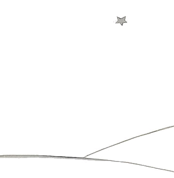

小王子 The Little Prince
第27章
第27章
现在，当然，已经过去六年了……我还从来没跟人讲过这个故事。同伴们看见我活着回来，都很高兴。我很忧伤，但我对他们说：“我累了……”
现在我的心情有点平静了。也就是说……还没有完全平静。而我知道，他已经回到了他的星球，因为那天天亮以后，我没发现他的躯体。他的躯体并不太沉……我喜欢在夜里倾听星星的声音。它们就像五亿个铃铛。
可是，我想到有件事出了意外。我给小王子画的嘴罩，忘了加上皮带！他没法把它系在绵羊嘴上了。于是我一直在想：“在他的星球上到底会发生什么事呢？说不定绵羊真的把花儿给吃了……”
有时我对自己说：“肯定不会！小王子每天夜里给花儿盖上玻璃罩，再说他也会仔细看好绵羊的……”于是我感到很幸福。满天的星星轻轻地笑着。
有时我对自己说：“万一有个疏忽，那就全完了！没准哪天晚上，他忘了盖玻璃罩，或者绵羊在夜里悄悄钻了出来……”于是满天的铃铛全都变成了泪珠！……
这可是一个很大很大的秘密哟。对于也爱着小王子的你们，就像对于我一样，要是在我们不知道的哪个地方，有一只我们从没见过的绵羊，吃掉了或者没有吃掉一朵玫瑰，整个宇宙就会完全不一样……
你们望着天空，想一想：绵羊到底有没有吃掉花儿？你们就会看到一切都变了样……
而没有一个大人懂得这有多重要呵！
对我来说，这是世界上最美丽、最伤感的景色。它跟前一页上画的是同一个景色，而我之所以再画一遍，是为了让你们看清这景色。就是在这儿，小王子在地球上出现，而后又消失。请仔细看看这景色，如果有一天你们到非洲沙漠去旅行，就肯定能认出它来。而要是你们有机会路过那儿，请千万别匆匆走过，请在那颗星星下面等上一会儿！如果这时有个孩子向你们走来，如果他在笑，如果他的头发是金黄色的，如果问他而他不回答，你们一定能猜到他是谁了。那么就请你们做件好事吧！请别让我再这么忧伤：赶快写信告诉我，他又回来了……
À Léon Werth.
Je demande pardon aux enfants d’avoir dédié ce livre à une grande personne. J’ai une excuse sérieuse： cette grande personne est le meilleur ami que j’ai au monde. J’ai une autre excuse： cette grande personne peut tout comprendre，même les livres pour enfants. J’ai une troisième excuse： cette grande personne habite la France où elle a faim et froid. Elle a besoin d’être consolée. Si toutes ces excuses ne suffisent pas，je veux bien dédier ce livre à l’enfant qu’a été autrefois cette grande personne. Toutes les grandes personnes ont d’abord été des enfants. （Mais peu d’entre elles s’en souviennent.） Je corrige donc ma dédicace：
À Léon Werth
quand il était petit garçon.